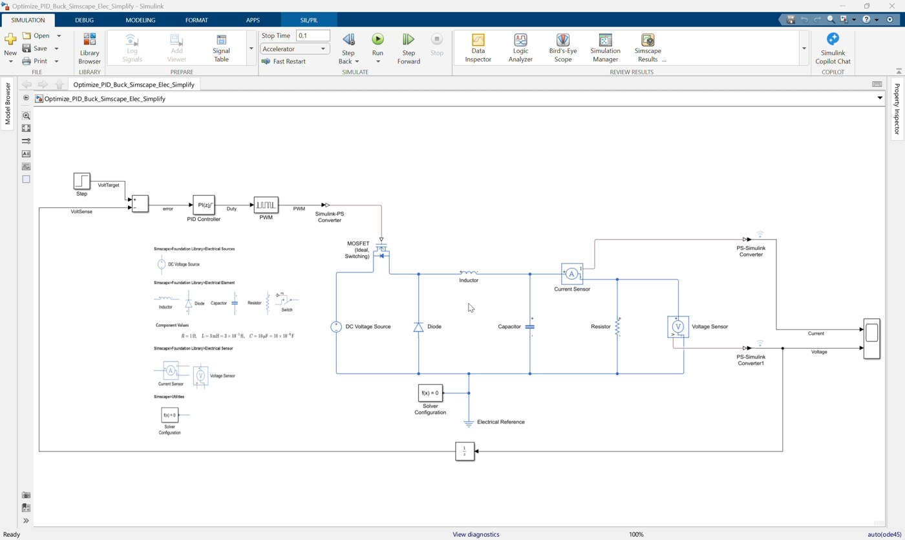
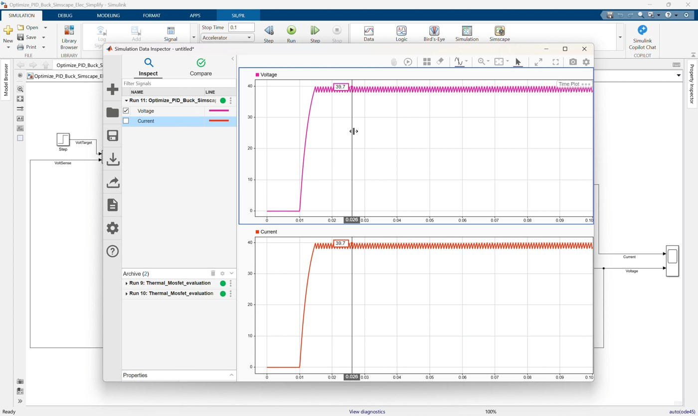
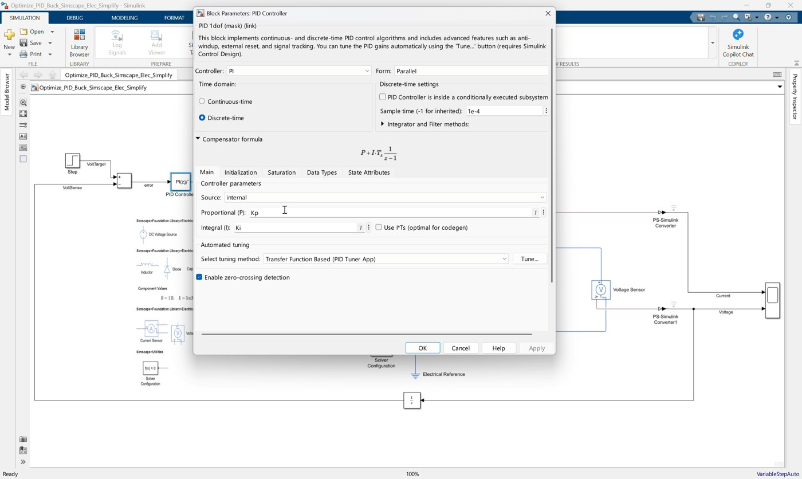
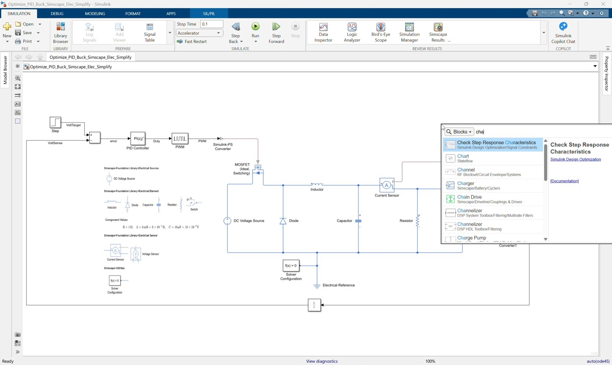
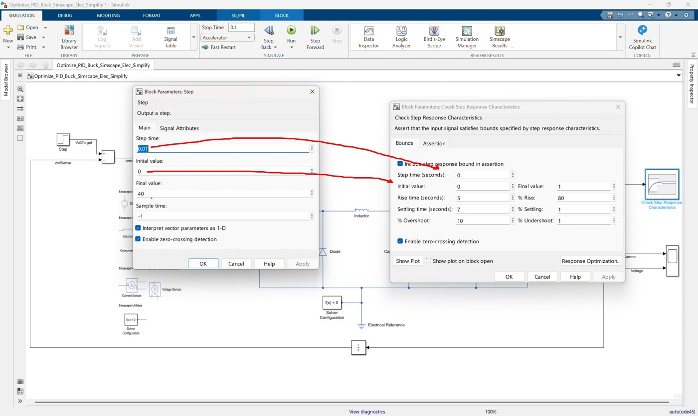
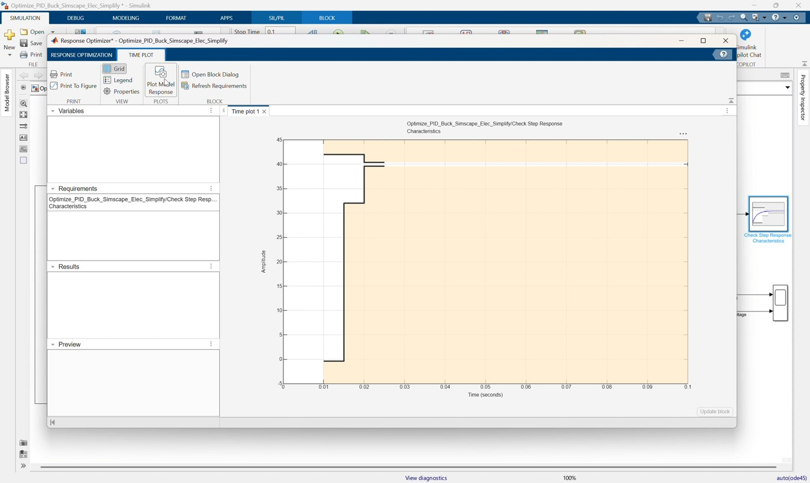
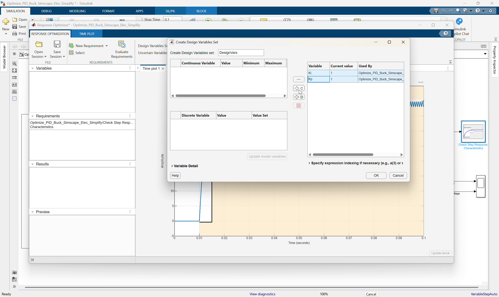
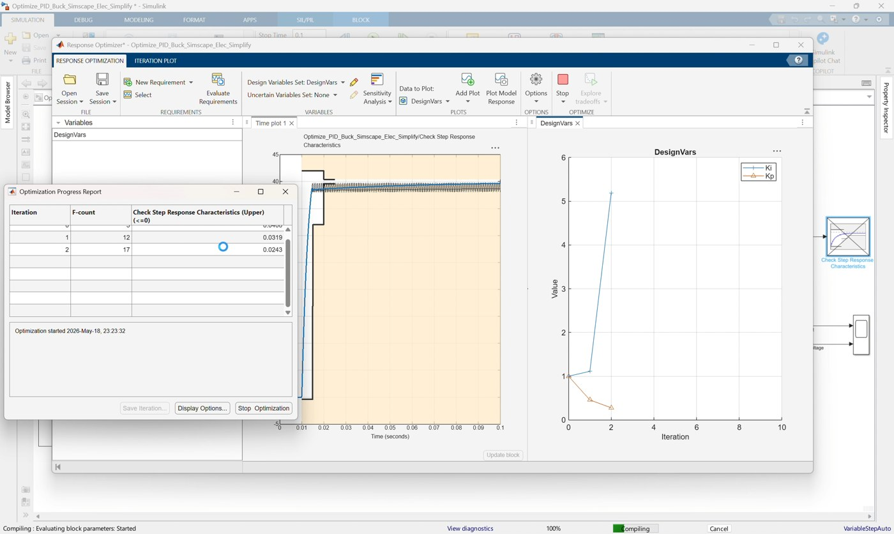
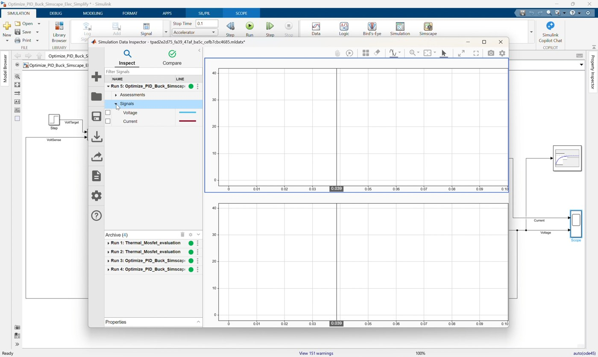
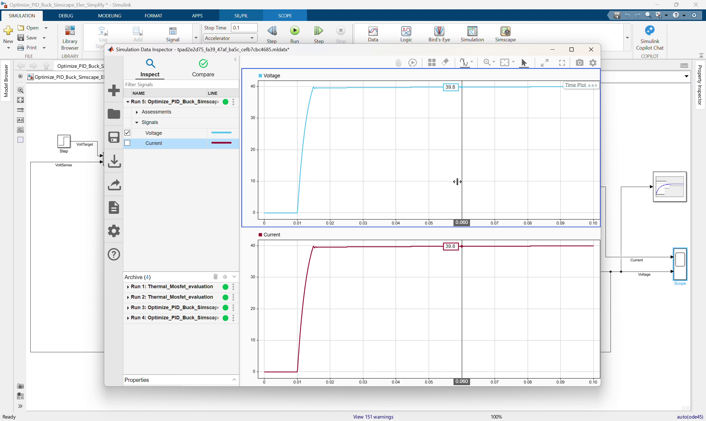

Workshop 04: Optimize PI Gains for the Simplified Buck Converter
Goal
Use Simulink Response Optimizer to tune the PI controller gains for the simplified buck converter against a time-domain step response requirement. This workshop follows the clip 04_Optimize_PID_Buck_Simscape_Elec_Simplify.mp4.
Start from:
Optimize_PID_Buck_Simscape_Elec_Simplify.slxFinish with a model that matches:
Optimize_PID_Buck_Simscape_Elec_Simplify_finished.slxThe starting model already contains the closed-loop buck converter from Workshop 03, a Step voltage command, and a PI controller that uses workspace variables Kp and Ki. In this workshop, participants add a step-response requirement, open Response Optimizer, select Kp and Ki as design variables, run an optimization, and validate the optimized response.
By the end of this workshop, participants should be able to:
- Add a response requirement block to a measured voltage signal.
- Configure step response requirements such as rise time, settling time, and overshoot.
- Use workspace variables
KpandKias tunable controller parameters. - Open Simulink Response Optimizer.
- Select design variables and run simulation-based optimization.
- Validate the optimized PI controller on the nonlinear Simscape buck converter.
Prerequisites
- MATLAB with Simulink.
- Simscape.
- Simscape Electrical.
- Simulink Design Optimization.
- Completed Workshop 03 PID/PI buck converter workflow.
Starting Model
Open Optimize_PID_Buck_Simscape_Elec_Simplify.slx.
The model already includes:
| Existing Block | Purpose |
|---|---|
Step | Provides a voltage target command |
Subtract | Calculates voltage error |
PID Controller | PI controller using Kp and Ki |
PWM | Converts controller output duty command into PWM |
Simulink-PS Converter | Drives the MOSFET gate with a physical signal |
| Buck converter power stage | Simscape plant |
Voltage Sensor and PS-Simulink Converter1 | Measures output voltage |
Current Sensor and PS-Simulink Converter | Measures output current |
Scope | Displays current and voltage |
The model is intentionally missing the response requirement block used by Response Optimizer.
Reference Values
Use these values during the workshop:
| Item | Value |
|---|---|
| DC input voltage | 50 V |
| Step initial value | 0 V |
| Step final value | 40 V |
| Step time | 0.01 s |
| PI proportional gain parameter | Kp |
| PI integral gain parameter | Ki |
Initial Kp | 1 |
Initial Ki | 1 |
| Controller type | PI |
| Controller form | Parallel |
| Controller sample time | 1e-4 s |
| PID output lower saturation | 0 |
| PID output upper saturation | 1 |
| PWM period | 1e-5 s |
| Simulation mode | accelerator |
| Simulation stop time | 0.5 s |
Reference response requirement settings in the finished model:
| Requirement Item | Value |
|---|---|
| Initial value | 0 |
| Final value | 40 |
| Step time | 0.01 s |
| Rise time | 0.005 s |
| Settling time | 0.01 s |
| Percent overshoot | 5% |
Workshop Procedure
Follow this order in the workshop:
Review model -> Check Step target and Kp/Ki controller -> Add response requirement
-> Configure step response bound -> Open Response Optimizer
-> Select requirement and design variables -> Use accelerator/Fast Restart
-> Optimize -> Apply/verify optimized gains -> Validate in Simulink1. Open and review the starting optimization model

Video screenshot: starting optimization model with the closed-loop buck converter already prepared.
- Open
Optimize_PID_Buck_Simscape_Elec_Simplify.slx. - Confirm the model has the closed-loop control path:
Step -> Subtract -> PID Controller -> PWM
Voltage Sensor -> PS-Simulink Converter1 -> Unit Delay -> Subtract- Confirm the PI controller output still drives the PWM block.
- Confirm the output voltage signal is available from
PS-Simulink Converter1.
2. Review the Step voltage target

Video screenshot: Step command used as the voltage target for response optimization.
- Open the
Stepblock. - Confirm the settings:
Step time = 0.01
Initial value = 0
Final value = 40The Step command gives Response Optimizer a clear voltage response to evaluate.
3. Review the tunable PI controller

*Video screenshot: PID Controller configured to use workspace variables Kp and Ki.*
- Open the
PID Controllerblock. - Confirm the controller type is:
PI- Confirm proportional gain is:
Kp- Confirm integral gain is:
Ki- Confirm output saturation is enabled:
Lower limit = 0
Upper limit = 1Using Kp and Ki lets Response Optimizer vary those values without changing the block structure.
4. Confirm workspace variables

*Video screenshot: model setup before optimizing the Kp and Ki variables.*
- In the MATLAB base workspace or model workspace, define initial values if they are not already present:
Kp = 1;
Ki = 1;- Update the model so the PID block can resolve both variables.
- If the model reports an undefined variable error, define
KpandKibefore opening Response Optimizer.
5. Add the step response requirement block

Video screenshot: adding the Check Step Response Characteristics requirement block.
- Open the Library Browser.
- Add:
Simulink Design Optimization > Signal Constraints > Check Step Response Characteristics- Place it near the measured voltage signal.
- Connect the converted output voltage signal from
PS-Simulink Converter1to the requirement block.
Use the converted Simulink voltage signal, not the physical signal from the voltage sensor.
6. Configure the step response requirement

Video screenshot: configuring the response envelope used by Response Optimizer.
- Open the
Check Step Response Characteristicsblock. - Enable the step response bound.
- Set the requirement values:
Initial value = 0
Final value = 40
Step time = 0.01
Rise time = 0.005
Settling time = 0.01
Percent overshoot = 5- Confirm the requirement display shows the expected response envelope.
The optimizer will try to adjust Kp and Ki so the output voltage stays inside this envelope.
7. Open Response Optimizer

Video screenshot: Response Optimizer session opened from the model.
- Open the Apps tab.
- Launch
Response Optimizer. - Confirm the step response requirement from the model appears in the Response Optimizer session.
- If prompted, create a new optimization session using the requirement block.
8. Add design variables

*Video screenshot: adding Kp and Ki as Response Optimizer design variables.*
- In Response Optimizer, open the design variables section.
- Add
Kp. - Add
Ki. - Confirm their initial values are:
Kp = 1
Ki = 1- Set practical bounds so the optimizer has a valid search range.
Example workshop bounds:
| Parameter | Initial Value | Lower Bound | Upper Bound |
|---|---|---|---|
Kp | 1 | 0 | 5 |
Ki | 1 | 0 | 500 |
The exact bounds can be adjusted during the demo, but they should be wide enough for the optimizer to improve the response and narrow enough to avoid unrealistic gains.
9. Configure simulation performance
- Set the model simulation mode to:
accelerator- Enable Fast Restart if available.
- Confirm simulation stop time is:
0.5The optimizer repeatedly simulates the switching Simscape model, so accelerator mode and Fast Restart reduce iteration time.
10. Run the optimization

*Video screenshot: Response Optimizer running iterations while varying Kp and Ki.*
- Click
Optimize. - Watch the output response plot and requirement envelope.
- Observe that Response Optimizer varies
KpandKi. - Let the optimization run until it finds a response that satisfies or improves the requirement.
Important explanation:
Response Optimizer is not changing the buck converter circuit.
It repeatedly simulates the same plant while varying Kp and Ki.11. Review and apply optimized values

Video screenshot: optimized design-variable values after the response optimization run.
- Review the optimized response plot.
- Check whether the output voltage satisfies the rise-time, settling-time, and overshoot requirement.
- Review the optimized
KpandKivalues. - Apply or update the optimized values in the model workspace or base workspace.
- Keep the PID block parameters as
KpandKi, so the model remains optimization-ready.
12. Validate the optimized model

Video screenshot: final model validation after applying optimized PI gains.
- Run the model in Simulink after applying the optimized values.
- Open the Scope or Simulation Data Inspector.
- Confirm the output voltage tracks the
40 Vstep command. - Confirm current response remains reasonable.
- Confirm the duty command remains valid through controller saturation.
- Save the completed model.
If needed, compare against:
Optimize_PID_Buck_Simscape_Elec_Simplify_finished.slxSuggested Instructor Flow
- Start by explaining that Workshop 03 used PID Tuner, while this workshop uses simulation-based response optimization.
- Open
Optimize_PID_Buck_Simscape_Elec_Simplify.slx. - Show that the PI controller already uses
KpandKi. - Show the Step command from
0 Vto40 V. - Add the
Check Step Response Characteristicsblock to the measured voltage signal. - Configure the response requirement envelope.
- Open Response Optimizer.
- Add
KpandKias design variables. - Use accelerator mode and Fast Restart to speed up repeated simulations.
- Run the optimization and explain that each iteration changes gains, not the plant.
- Apply the optimized values and validate the response in Simulink.
Participant Exercise
Ask participants to compare two optimization setups:
| Case | Requirement Style | Expected Effect |
|---|---|---|
| Conservative | Slower rise time or lower overshoot | Smooth but slower response |
| Aggressive | Faster rise time or tighter settling time | Faster response, possible overshoot or saturation |
For each case, record:
- Optimized
Kp. - Optimized
Ki. - Whether the response satisfies the requirement envelope.
- Overshoot.
- Settling behavior.
Discussion questions:
How do Kp and Ki change when the rise-time requirement is tighter?
What happens if the requirement is too aggressive for the buck converter?
Why does accelerator mode help during optimization?Troubleshooting
| Symptom | Likely Cause | Fix |
|---|---|---|
Response Optimizer cannot find Kp or Ki | Variables are not defined in a visible workspace | Define Kp = 1; Ki = 1; in the base or model workspace |
| PID block reports undefined variables | Kp or Ki are missing or out of scope | Define variables before updating/running the model |
| Requirement block is not evaluated | It is connected to the wrong signal | Connect it to the converted voltage signal from PS-Simulink Converter1 |
| Optimization is very slow | The full switching Simscape model is simulated repeatedly | Use accelerator mode and Fast Restart |
| Optimizer cannot satisfy the requirement | Requirement is too aggressive or bounds are too narrow | Relax rise/settling requirements or widen gain bounds |
| Duty command saturates for too long | Gains are too aggressive | Reduce gain bounds or relax the response requirement |
Reference Model Check
The completed model should contain this optimization structure:
Step target -> Subtract -> PID Controller(P=Kp, I=Ki) -> PWM
PWM -> Simulink-PS Converter -> MOSFET gate
Voltage Sensor -> PS-Simulink Converter1 -> Unit Delay -> Subtract feedback
Voltage Sensor -> PS-Simulink Converter1 -> Check Step Response Characteristics
Voltage Sensor -> PS-Simulink Converter1 -> Scope input 2
Current Sensor -> PS-Simulink Converter -> Scope input 1Reference settings:
Step time = 0.01
Step initial value = 0
Step final value = 40
PID P = Kp
PID I = Ki
PID output lower limit = 0
PID output upper limit = 1
PID sample time = 1e-4
PWM period = 1e-5
Response requirement rise time = 0.005
Response requirement settling time = 0.01
Response requirement percent overshoot = 5
Simulation mode = accelerator
Simulation stop time = 0.5